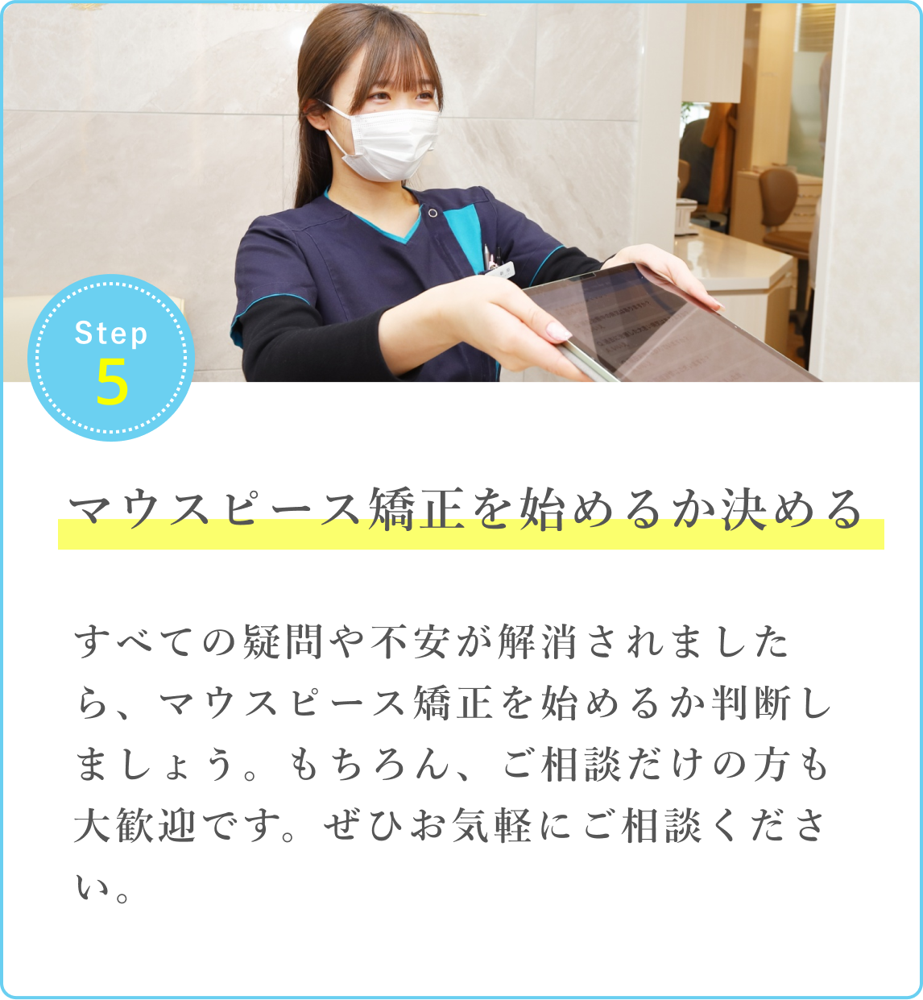
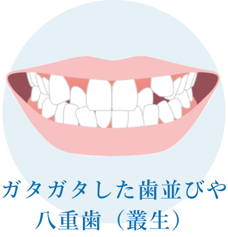
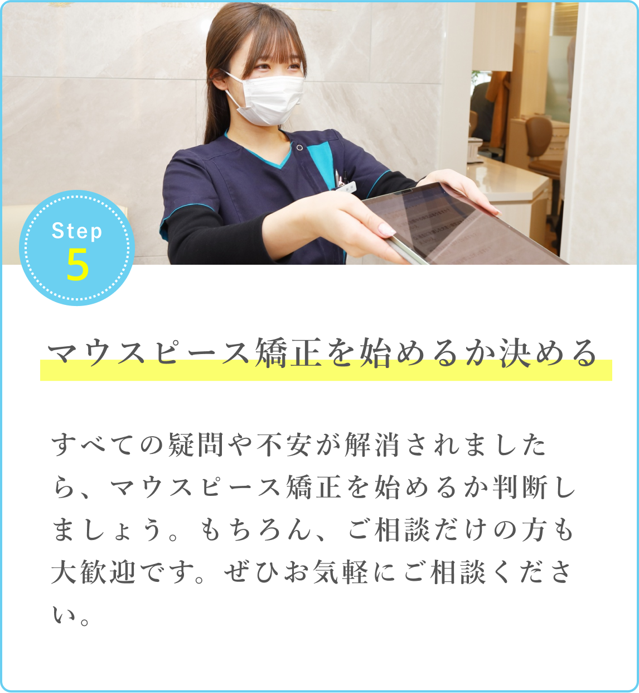

初回カウンセリングの
メリット
- 無料で受けることができる！
-
いくらでどのくらい美しくなるのか
すぐわかる！ -
歯並びに関わる悩みや不安を気軽に相談
できる！ -
自分の今の歯の状態を正しく知ることが
できる！


自分を好きになるために
始めるなら早い方がいい、だけど
以下の歯並びが対象です

※ 上記の歯並びであっても、マウスピース矯正が
適応外となる場合もございます。
※ マウスピース矯正の対象年齢は16歳以上が目安です。
※ それ以下の年齢の場合、別の治療方法をご提案する場合がございます。
※ 年齢上限はございません。
上記以外でお悩みの場合も、状態により
マウスピース矯正で治療可能な場合はもちろんございます。
※ 自社調べ
一気に支払うのは大変な方へ
どのような支払い方法にするかは
初回カウンセリングで相談して決めることができます。
医療費控除とは、家計を1つにする家族が1年間に支払った医療費の合計が10万円を超える場合、確定申告することで税金還付を受けられる制度です。家族の総所得が200万円未満であれば総所得の5％を超える場合に申請できます。特別な申請書は必要なく、確定申告書と医療費の明細書等、本人確認書類があれば申請可能です。
当院の矯正治療も、診断書をお持ちの上で確定申告すれば控除対象となる可能性があります。控除できるかどうかについては事前にご確認ください。
※ 保険証をお持ちください
初回カウンセリングを受けたあと、
治療を始めるかどうかは
持ち帰って検討することができます。
実際いくらで、
どのくらい歯並びが変わる？
あなたの歯並び、いくらでどれだけ
美しく整うのか、症例を見て
イメージしてみてください。
マウスピース矯正の主なリスク 虫歯・歯肉炎・歯周病・ブラックトライアングル・歯根吸収・歯肉退縮・1日20時間以上のマウスピース装着が必須・マウスピースにより痛みを感じる可能性・治療中に一時的に咬み合わせに不具合をきたす可能性・リテーナーは動的治療終了後1年間は20時間以上、歯列に後戻りが認められなければ2年目以降は8時間以上（就寝時含む）装着

今はまだマウスピース矯正を始めるか
決めていない、という方でも大歓迎です！
あなたのご来院をスタッフ一同、
心よりお待ちしております。
旅行、脱毛、ジムなど色々したくて
つい後回しにしがちな歯科矯正…
※ 上記は治療効果ではなく、加工によるイメージ画像です
「芸能人は歯が命」と言われるほど、歯のケアはとても大切。
歯並びを美しく整えることで、清潔感がアップしたり、結果的に顔の形や見た目の印象に良い効果が期待できます。

想像してみてください。
半年後、あなたの歯がキレイになって、
写真を撮る時も、”あの人”の前でも、
自信を持って笑うことができたら、
幸せだと思いませんか？
今年こそ
「歯がキレイに整った！」
「矯正してよかった！」
そんな素敵な瞬間を、
矯正で経験してみませんか？
さあ、
あなたの人生を変えましょう。
まずは一度、
お話だけでも聞いてみませんか？
歯科医師やスタッフが
あなたにやさしくご説明します
ページをここまで閲覧してくださり、感謝いたします。
このページを見ているということは、歯の矯正に関心をお持ちの方でしょう。
矯正治療は、なかなか始めるのが難しく感じるものですよね。
その思い、私たちは深く理解しています。
もし、今、歯の矯正に関心を抱いているなら、
是非、その一歩を勇気を持って進んでください。
治療後の整った歯の姿で、
「最近、よく笑うようになって綺麗だねと言われる。」
「写真を撮る時、堂々と笑える。」
「食事中、歯に食べ物が挟まらなくなった！」
こんな体験を多くの方がしています。

美しい歯並びの喜びは、矯正治療を受けた人だけが知るものです。
我々と一緒に、一生を共にする歯の美しさを追求しましょう。
美しい歯のラインを手に入れましょう。
治療が完了した後、
「あのとき決断してよかった！」
と思える日が訪れることを信じています。
お気軽に、初回カウンセリングへお越しください。
あなたのご来院を心よりお待ち申し上げております。
カンタン3分で予約できます